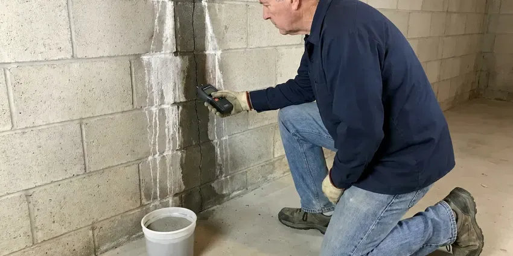

Residential Plumbing Service in Columbus, MS
Need a plumber who treats your home with respect in Columbus, MS? Our licensed team fixes leaks, clogs and fixtures and leaves no mess behind.
- Same-Day Home Plumbing Service
- Honest Pricing
- Local Columbus Experts
- Upfront Fixed Pricing

Fix Leaks, Clogs and Fixtures the Right Way in Columbus, MS.
Don't let plumbing problems upset your home life, contact DFM Plumbing for quick and efficient solutions.
Professional Residential Plumbing Service for Columbus, MS Homeowners
At DFM Plumbing, we specialize in residential plumbing service, offering reliable solutions for all types of homes in Columbus, MS. From routine maintenance to emergency repairs, our team delivers quality service you can depend on. We focus on durable repairs that stand up to local conditions.
Our expertise includes:
- Faucet, toilet, shower valve and garbage disposal repair and installation
- Sewer line repair and upgrades.
- Drain cleaning and clog removal.

Additional Plumbing Maintenance Services in Columbus, MS
Our maintenance and specialty plumbing services in Columbus, MS catch small problems before they become emergencies.


Customers
Why Choose DFM Plumbing for Residential Plumbing Service in Columbus, MS?
Choosing DFM Plumbing for your residential plumbing service means selecting a team committed to lasting solutions and customer satisfaction. We understand the real challenges that Mississippi homes face, from hard water issues to aging pipes.
- Respect Your Home, We use shoe covers and drop cloths and clean up before we go.
- Prompt Service, We focus on quick response times for all residential plumbing needs, minimizing disruption to your home and family.
- Certified Pros, All our plumbers are licensed, insured and continuously trained on the latest plumbing technologies and Mississippi codes.
Citywide Coverage
Whether you live in a condo, townhome or custom house, our team covers all of Columbus and the surrounding communities. Evening and weekend appointments are often available.
Experienced Team
Our plumbing technicians are experienced professionals with deep experience in residential plumbing service for Mississippi homes. They are skilled in diagnosing complex issues, from pipe corrosion caused by water chemistry to foundation leaks. Continuous training keeps them current with the best practices.
Safety-First Approach
Safety and code compliance are paramount in every residential plumbing service job we take on. Our plumbers adhere to all local Columbus and Mississippi plumbing codes, so your home's systems are not only functional but also safe and legal. We secure all required permits for major work.
Trusted Certified Columbus Plumbing Services Professionals
At DFM Plumbing, we take pride in providing certified plumbing services throughout Columbus, MS. Backed by leading industry credentials, our experienced plumbers combine technical skill with genuine customer care. Whether it is repair, installation, or maintenance, we follow strict safety and quality standards to deliver long-lasting results you can trust.
Call Us Now PHCC Plumbing Contractor Recognition
PHCC Plumbing Contractor Recognition Better Business Bureau (BBB) Accreditation
Better Business Bureau (BBB) Accreditation Angi Certified Pro
Angi Certified Pro ISO 9001 Quality Management Certification
ISO 9001 Quality Management CertificationTrusted Residential Plumbing Service Solutions in Columbus, MS
Slab Leak Detection & Repair in Columbus
Slab leaks are a serious concern for homes built on concrete foundations. Low, wet ground in many areas also means slow drainage, which matters for sewer lines and septic fields alike. Our technicians use modern, non-invasive acoustic and thermal imaging technology to accurately pinpoint the exact location of the leak under your foundation. Early detection is critical to prevent significant structural damage and costly water waste. Once located, we provide efficient repair options, which may include direct access, rerouting or pipe bursting, always choosing the least disruptive method for your home.

Drain Cleaning & Clog Removal in Columbus, MS
Clogged drains are a common nuisance in Columbus homes, often caused by grease, hair and soap scum buildup. We use professional-grade tools like augers, hydro-jetting equipment and drain snakes to clear even the toughest blockages in kitchen sinks, bathroom drains and main sewer lines. Our methods are safe for your pipes and effective at removing obstructions that DIY solutions can't handle. We can also inspect lines with cameras to find recurring problems, such as tree root intrusion or collapsed pipes, which are sometimes a factor in older Columbus properties.
Emergency Home Plumbing in Columbus
Burst pipes, sewage backups and gas smells cannot wait until Monday. Our plumbers respond to emergency calls with fully stocked trucks so most problems are stopped and repaired on the first visit. We help you shut off water or gas while we are on the way. Fast action limits damage to floors, drywall and cabinets.
Water Heater Repair & Installation in Columbus
Homes rely heavily on efficient water heaters, especially when temperatures swing from season to season. We service and install all types, including tankless, electric and gas models from brands like Rheem, Bradford White and A.O. Smith. Common issues we address include sediment buildup from hard water, anode rod corrosion and thermocouple failures. Our team can diagnose heating element problems or gas valve malfunctions, restoring your hot water quickly. We also advise on energy-efficient upgrades suitable for your home's size and family needs, keeping compliance with local codes.
Residential Plumbing Costs in Columbus, MS
Simple repairs like a faucet cartridge or toilet rebuild often run $150 to $350. Water heater replacements typically range from $1,400 to $3,000, and whole-home repipes often cost $5,000 to $15,000 depending on size. We give you a written flat price before starting. Many jobs also come with options so you can choose what suits your budget.
Water Heater Service and Installation in Columbus, MS
Whether you have a traditional tank water heater or a tankless unit, our residential plumbing service covers all aspects of water heater maintenance, repair and installation. We address common issues like no hot water, strange noises or leaks, and can recommend energy-efficient replacements suitable for your home. Our team handles everything from gas line connections to proper venting, providing safe and efficient operation of your hot water system.
Emergency Plumbing Repair in Columbus
When a pipe bursts or a drain backs up unexpectedly, you need immediate help. Our emergency residential plumbing service in Columbus is available to address urgent issues like severe leaks, overflowing toilets or complete loss of water. We arrive quickly, assess the situation and make effective repairs to minimize water damage and restore function. Don't let a plumbing emergency escalate, call us for rapid response.

Faucet, Toilet and Fixture Repair in Columbus, MS
Hard water wears out faucet cartridges, toilet fill valves and flappers faster than in soft water areas. We replace cartridges in Moen, Delta and Kohler faucets, rebuild running toilets and fix leaking shower valves. When a fixture is beyond repair, we install new ones and haul the old ones away. Small drips add up, so fixing them saves water and money.
Local Residential Plumbing Service Near Me in Columbus, MS
When you search for 'residential plumbing service near me' in Columbus, MS, DFM Plumbing is your local answer. Our team is strategically located to provide fast, efficient service to homes across the entire area. We work hard to be a trusted part of the community, delivering quality plumbing solutions right to your doorstep.
Choosing a local plumber means getting service from someone who understands the specific needs of Columbus homes. We're familiar with the local water system, common building practices and environmental factors that affect plumbing systems here. For dependable residential plumbing service near me, DFM Plumbing is the proven choice.
DFM Plumbing at a Glance
- Fully licensed plumbing team covering Columbus, MS
- Same-day appointments and 24/7 emergency response
- Clear written estimates, no hidden fees
- 4.8-star rated by 503+ Mississippi customers
Columbus Map
Columbus Information
- Population
- 23,035
- Area codes
- Local
- Service area
- Columbus and communities within 40 miles
- Nearby
- Starkville, Tupelo, Meridian, Oxford
Dependable residential plumbing service is important for homes in Columbus, MS to handle issues like hard water scaling, foundation movement that stresses pipes and the risks of extreme temperatures.
Expert Services
Trust our professionals for reliable DFM Plumbing solutions in Columbus, MS.
Our Specialized Plumbing Services in Columbus, MS
At DFM Plumbing, we provide a complete range of plumbing services across Columbus, MS. From leak detection to full system installations, our team ensures fast, precise, and affordable service for both residential and commercial properties. Explore our core services below:


How Our Residential Plumbing Service Visit Works in Columbus, MS
From your first call to the completion of the job, we deliver a smooth and professional experience for every residential plumbing service in Columbus.
Request a Quote
Contact us at (601) 265-9260 to describe your plumbing issue or service need. Our helpful team will gather initial details and schedule a convenient appointment for an on-site assessment.
On-Site Assessment
A certified plumber will visit your Columbus home to thoroughly inspect the problem, diagnose the cause and discuss the best solutions with you. We use advanced tools for accurate diagnostics.
Clear Proposal
You'll receive a transparent, written estimate for the residential plumbing service, outlining all costs and recommended work. We ensure you understand everything before any work begins.
Frequently Asked Questions About Residential Plumbing Service in Columbus
The cost for residential plumbing service in Columbus varies a great deal depending on the specific issue. Minor repairs like a leaky faucet might range from $150 to $300, while more complex jobs like a main line clog or water heater replacement could be $400 to $1,500 or more. We always provide a detailed, upfront quote after diagnosing the problem.
DFM Plumbing services and installs a wide range of reputable plumbing brands, including but not limited to Moen, Delta, Kohler, American Standard, Toto, Rheem, Bradford White and Navien. We can recommend the best options for durability and efficiency tailored to your home's needs.
For plumbing emergencies in Columbus, MS, we focus on rapid response. Our goal is to have a licensed plumber at your home as quickly as possible, often within a few hours, to reduce damage. We understand the urgency of situations like burst pipes or severe overflows and act fast.
We work with all major trusted brands for plumbing fixtures and water heaters, including Moen, Kohler, Delta, Rheem, A.O. Smith, Bradford White and Navien. Our technicians are trained to service and install a broad variety of models, ensuring compatibility and quality for your home.
Hard water contains high levels of dissolved minerals, primarily calcium and magnesium. Soft water has these minerals removed. Hard water can cause mineral buildup in pipes, reduced soap lather and appliance damage, while soft water is easier on plumbing and skin.
A plumber is a licensed professional who can handle all aspects of water supply, drainage, heating and gas systems in a home, including repairs, installations and inspections. A drain cleaner usually specializes only in clearing clogs. DFM Plumbing provides full-service plumbing, so we can address the root cause of drain issues and more.
Use a water softener for hard water, keep grease out of drains and check your water pressure. A yearly plumbing inspection catches small issues early.
While minor tasks like tightening a loose connection might be DIY-friendly, we usually advise against tackling complex plumbing repairs yourself. Incorrect repairs can lead to more significant damage, costly leaks and even safety hazards, especially with gas lines or water heaters. Professional service ensures the job is done correctly and safely.
What People Are Saying About Our Plumbing Experts?

Robert G.
The trenchless sewer replacement saved our front yard. They walked us through the camera inspection footage first so we knew exactly what we were paying for.
Sewer Line Replacement · Columbus, MS
Patricia H.
We had a slab leak that two other companies could not find. DFM Plumbing located it in under an hour, explained our options, and the price matched the quote to the dollar.
Slab Leak Repair · Tupelo, MSJames P.
Our commercial plumbing system had a leak under the sink, and DFM Plumbing handled it professionally. The plumbers arrived quickly and restored everything without disruption to our customers.
Commercial Plumbing · Tupelo, MS
Sofia M.
Two new toilets installed in one visit, no mess left behind, and the tech even adjusted a faucet he noticed was dripping. Fair pricing and really friendly.
Toilet Installation · Meridian, MS
Daniel K.
A pipe burst at 11 pm and they actually answered. The plumber showed up within the hour, shut everything down, and had us back to normal the next morning. Could not ask for more.
Emergency Plumbing · Meridian, MS
Mark T.
When our office needed drain cleaning, DFM Plumbing provided quick, reliable service. The plumber arrived on time and made sure every drain flowed perfectly before leaving. Very satisfied.
Drain Cleaning · Tupelo, MS